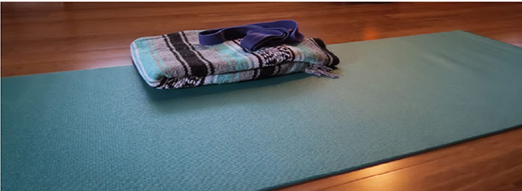

Yoga Schedule
Mats, bk=locks, and blankets provided. Please arrive 10 minutes before class begins. Relax in our Serenity Lounge before or after your class.
- Gentle Hatha Yoga
- Intended for beginners and anyone wishing a grounded foundation in the practice of yoga, this 60 minute class of poses and slow movement focuses on asana (proper alignment and posture), pranayama (breath work), and guided meditation to foster your mind and body connection.
- Vinyasa Yoga
- Although designed for intermediate to advanced students, beginners are welcome to sample this 60 minute class that focuses on breath-synchronized movement—you will inhale and exhale as you flow energetically through yoga poses.
- Restorative Yoga
- This 90 minute class features very slow movement and long poses that are supported by a chair or wall. This calming, restorative experience is suitable for students of any level of experience. This practice can be a perfect way to help rehabilitate an injury.
Relax Anytime with Savasana
“Prepare yourself for savasana. Lie down on your yoga mat with your arms at your side with palms up. Close your eyes and breathe slowly but deeply. Sink into the mat and let your worries slip away. When you are ready, roll on your side and use your arms to push yourself to a sitting position with crossed legs. Place your hands in a prayer position. Be grateful for all that you have in life. Namaste.”
